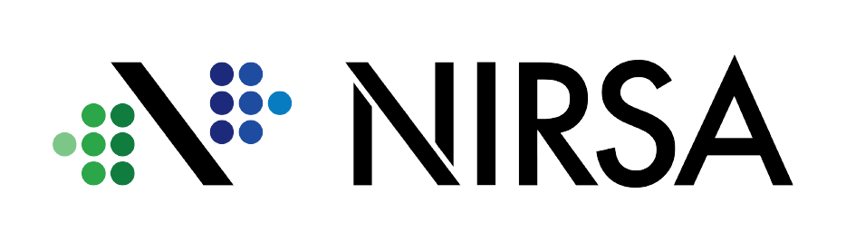

<div class="wrapper d-flex flex-column min-vh-100 bg-light dark:bg-transparent">
  <c-container fluid>
    <c-row>
      <c-col md="1" class="d-flex justify-content-center">
        
      </c-col>
      <c-col md="11" class="mt-2 d-flex justify-content-center">
        <label cCol cLabel="col" for="colFormLabelLg" sizing="lg" style="text-align: center;">
          INTEGRACIÒN NW SAP - ATUNERA
        </label>
      </c-col>
    </c-row>
    <mat-divider style="background-color: black;"></mat-divider>
    <c-row class="mb-2">
      <c-col md="12" class="mt-2 d-flex justify-content-center">
        <label cCol cLabel="col" for="colFormLabelLg" sizing="sm" style="text-align: center;">
          Elija la fuente de datos
        </label>
      </c-col>
      <c-col md="12" class="mt-2 d-flex justify-content-center">
        <c-form-check inline>
          <input cFormCheckInput checked id="nw" name="radioinline" type="radio" value="nw"
            (change)="radioChangeHandler($event)" />
          <label cFormCheckLabel for="nw">NW</label>
        </c-form-check>
        <c-form-check inline>
          <input cFormCheckInput id="excel" name="radioinline" type="radio" value="excel"
            (change)="radioChangeHandler($event)" />
          <label cFormCheckLabel for="excel">Excel</label>
        </c-form-check>
        <div *ngIf="upload">
          <input type="file" class="file-upload" (change)="addfile($event)" accept=".xlsx">
        </div>
      </c-col>
    </c-row>
    <mat-divider style="background-color: black;"></mat-divider>
    <c-row class="mt-2" [gutter]="2">
      <c-col md="1" xs="6">
        <label cCol cLabel="col" for="colFormLabelLg" sizing="sm" style="text-align: center;">
          Proceso
        </label>
      </c-col>
      <c-col md="2" xs="6">
        <select class="form-control mb-1" [(ngModel)]="opcionSeleccionado" (change)="capturar()">
          <option value=0></option>
          <option *ngFor="let pro of listaProcesos" value={{pro.idnwitipoproceso}}>
            {{pro.descripcion}}
          </option>
        </select>
      </c-col>
      <c-col md="1" xs="6">
        <label cCol cLabel="col" for="colFormLabelLg" sizing="sm" style="text-align: center;">
          Tipo Proceso
        </label>
      </c-col>
      <c-col md="2" xs="6">
        <select class="form-control mb-1" [(ngModel)]="opcionSeleccionadoTipo" (change)="capturarTipo()">
          <option value="0"></option>
          <option *ngFor="let pro of listaTipoProcesos" value={{pro.codintegracion}}>
            {{pro.descripcion}}
          </option>
        </select>
      </c-col>
      <c-col md="1" xs="6">
        <label cCol cLabel="col" for="colFormLabelLg" sizing="sm" style="text-align: center;">
          Fecha
        </label>
      </c-col>
      <c-col md="2" xs="6">
        <form class="row">
          <div class="col-5">
            <div class="input-group date" id="datepicker" style="width: 140px">
              <input type="date" class="form-control" id="date" (change)="capturarDate($event)" />
            </div>
          </div>
        </form>
      </c-col>
      <c-col md="3" xs="6">
        <button style="background-color: {{colorConsultar}};" mat-flat-button [disabled]="controlConsultar"
          (click)="consultar()" [class.spinner]="loadingConsultar">
          Consultar
        </button>
      </c-col>
    </c-row>
    <c-row class="mt-3" [gutter]="2">
      <c-col md="6" xs="12">
        <input aria-label="default input example" cFormControl placeholder="Search" type="text" matInput
          (keyup)="applyFilter($event)">
      </c-col>
      <c-col md="6" xs="12" class="justify-content-center">
        <div class="d-grid gap-1 d-md-flex justify-content-md-center">
          <button 
            mat-mini-fab 
            (click)="enviarNotificacion()" 
            disabled={{controlNotificacion}}
            matTooltip="Enviar Notificaiones"
            aria-label="Enviar-Noticiaciones" 
            [class.spinner]="loadingEnviarNotificaciones"
            style="background-color: {{colorNotificacion}}"
          >
            <mat-icon class="material-icons color_icon">send</mat-icon>
          </button>
          <button mat-mini-fab matTooltip="Guardar" disabled={{controlGuardar}} aria-label="Guardar-Noticiaciones"
            style="background-color:{{colorGuardar}};">
            <mat-icon class="material-icons color_icon">save</mat-icon>
          </button>
        </div>
      </c-col>
    </c-row>
    <c-row class="mt-3">
      <c-col md="12" xs="12">
        <div id="div1">
          <table mat-table class="mat-elevation-z8" [dataSource]="dataSource" style="width:100%;">
            <ng-container *ngFor="let col of columnasName" [matColumnDef]="col">
              <th mat-header-cell *matHeaderCellDef>
                <div *ngIf="col == columnasName[0]">
                  <mat-checkbox 
                    color="secondary"
                    (change)="$event ? masterToggle() : null"
                    [checked]="selectionCheck.hasValue() && isAllSelected()"
                    [indeterminate]="selectionCheck.hasValue() && !isAllSelected()" [aria-label]="checkboxLabel()">
                  </mat-checkbox>
                </div>
                <div *ngIf="col !== columnasName[0]" style="width: 150px;">
                  {{col}}
                </div>
              </th>
              <td mat-cell *matCellDef="let element; let i=index;">
                <ng-container [ngSwitch]="col">
                  <span *ngSwitchCase="'select'" id="centrado">
                    <mat-checkbox 
                      color="secondary"
                      style="background-color: rgb(207, 211, 214);color: black;"
                      (click)="$event.stopPropagation()"
                      [disabled]=element.status
                      (change)="$event ? selectionCheck.toggle(element) : null"
                      [checked]="selectionCheck.isSelected(element)" [aria-label]="checkboxLabel(element)">
                    </mat-checkbox>
                  </span>
                  <div id="centrado" *ngSwitchCase="'estado'" disabled="element.status">
                    <span 
                      style="color: {{
                        element.status || element.estadoRespuesta>1?
                         element.estadoRespuesta==0?
                          'orange':
                            element.estadoRespuesta==1?
                            'green':
                            'red'
                        :'blue'
                      }};"
                    >
                    {{element.status || element.estadoRespuesta>1?
                      element.estadoRespuesta==0?
                        'procesando':
                        element.estadoRespuesta==1?
                        'exito':
                        'error'
                      :
                      'sin procesar'
                    }}
                    </span>
                    <i 
                      style="margin-left: 10px;font-size: 30px;" 
                      class="material-icons pointer" 
                      matTooltip="visualizar documentos"
                      *ngIf="element.estadoRespuesta == 1"
                      (click)="openDocumento(documento,element.documentosRespuestas)"
                    >
                      article
                    </i>
                    <i 
                      style="margin-left: 10px;font-size: 30px;" 
                      class="material-icons pointer" 
                      matTooltip="visualizar respuesta"
                      *ngIf="element.estadoRespuesta == 2"
                      (click)="openRespuesta(mensaje,element.message)"
                    >
                      visibility
                    </i>
                  </div>
                  <div *ngSwitchCase="'acciones'" id="centrado">
                    <i style="font-size: 30px;" class="material-icons pointer" matTooltip="visualizar detalles" (click)="open(content,element)">
                      visibility
                    </i>
                  </div>
                  <span *ngSwitchDefault id="centrado">
                    {{element[col]}}
                  </span>
                </ng-container>
              </td>
            </ng-container>
            <tr mat-header-row *matHeaderRowDef="columnasName"></tr>
            <tr mat-row *matRowDef="let row; columns: columnasName;"></tr>
          </table>
        </div>
        <mat-paginator 
          id="colorselect"
          showFirstLastButtons 
          [pageSizeOptions]="[5, 10, 20]" 
          aria-label="Select noticaciones"
        >
        </mat-paginator>
      </c-col>
    </c-row>
    <ng-template #content let-modal>
      <div class="modal-header">
        <h4 class="modal-title" id="modal-basic-title">Detalles</h4>
        <button type="button" class="btn-close" aria-label="Close" (click)="modal.dismiss('Cross click')"></button>
      </div>
      <div class="modal-body">
        <div id="div1" class="alto">
          <table mat-table class="mat-elevation-z8" [dataSource]="dataSourceDetalle" style="width:100%;">
            <ng-container *ngFor="let col of columnasNameDetalle" [matColumnDef]="col">
              <th mat-header-cell *matHeaderCellDef>
                <div>
                  {{col}}
                </div>
              </th>
              <td mat-cell *matCellDef="let element; let i=index;">
                <ng-container [ngSwitch]="col">
                  <span *ngSwitchDefault id="centrado">
                    {{element[col]}}
                  </span>
                </ng-container>
              </td>
            </ng-container>
            <tr mat-header-row *matHeaderRowDef="columnasNameDetalle"></tr>
            <tr mat-row *matRowDef="let row; columns: columnasNameDetalle;"></tr>
          </table>
        </div>
        <div>
          total de detalles {{ total_row }}
        </div>
      </div>
      <div class="modal-footer">
        <button type="button" class="btn btn-outline-dark" (click)="modal.close('Save click')">Cerrar</button>
      </div>
    </ng-template>
    <ng-template #mensaje let-modal>
      <div class="modal-header">
        <h4 class="modal-title" id="modal-basic-title">Mensaje de Respuesta</h4>
        <button type="button" class="btn-close" aria-label="Close" (click)="modal.dismiss('Cross click')"></button>
      </div>
      <div class="modal-body justify-content-center" style="display: flex;">
        {{respuesta}}
      </div>
      <div class="modal-footer">
        <button type="button" class="btn btn-outline-dark" (click)="modal.close('Save click')">Cerrar</button>
      </div>
    </ng-template>
    <ng-template #documento let-modal>
      <div class="modal-header">
        <h4 class="modal-title" id="modal-basic-title">Documentos</h4>
        <button type="button" class="btn-close" aria-label="Close" (click)="modal.dismiss('Cross click')"></button>
      </div>
      <div class="modal-body justify-content-center" style="display: flex;">  
        <div id="div1" class="alto" style="width: 400px;">
          <table mat-table class="mat-elevation-z8" [dataSource]="dataSourceDocument" style="width:100%;">
            <ng-container *ngFor="let col of columnasNameDocument" [matColumnDef]="col">
              <th mat-header-cell *matHeaderCellDef>
                <div style="width: 200px;">
                  {{col}}
                </div>
              </th>
              <td mat-cell *matCellDef="let element; let i=index;">
                <ng-container [ngSwitch]="col">
                  <span *ngSwitchDefault id="centrado">
                    {{element[col]}}
                  </span>
                </ng-container>
              </td>
            </ng-container>
            <tr mat-header-row *matHeaderRowDef="columnasNameDocument"></tr>
            <tr mat-row *matRowDef="let row; columns: columnasNameDocument;"></tr>
          </table>
        </div>
      </div>
      <div class="modal-footer">
        <button type="button" class="btn btn-outline-dark" (click)="modal.close('Save click')">Cerrar</button>
      </div>
    </ng-template>
  </c-container>
</div>